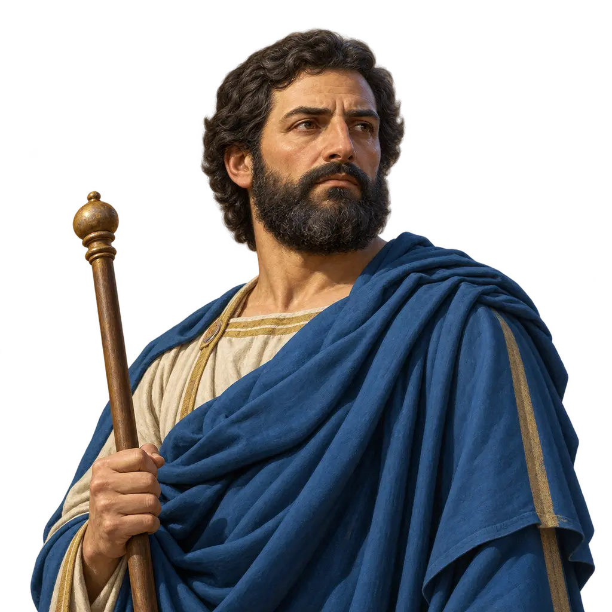
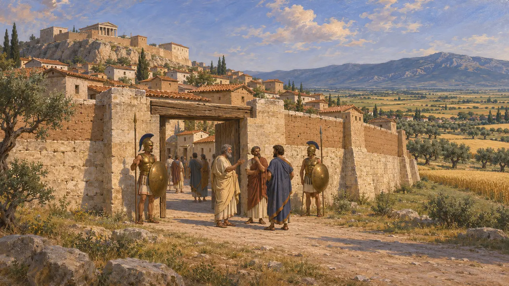
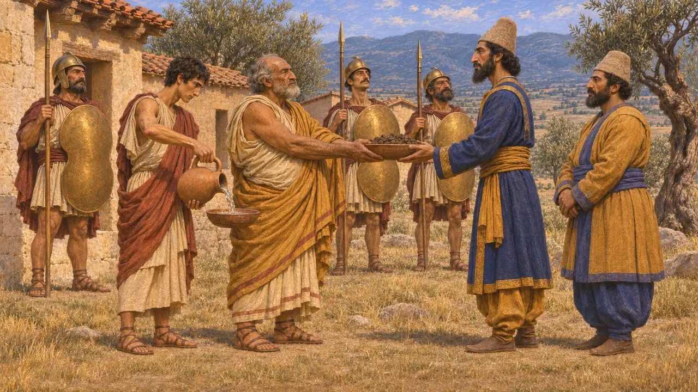
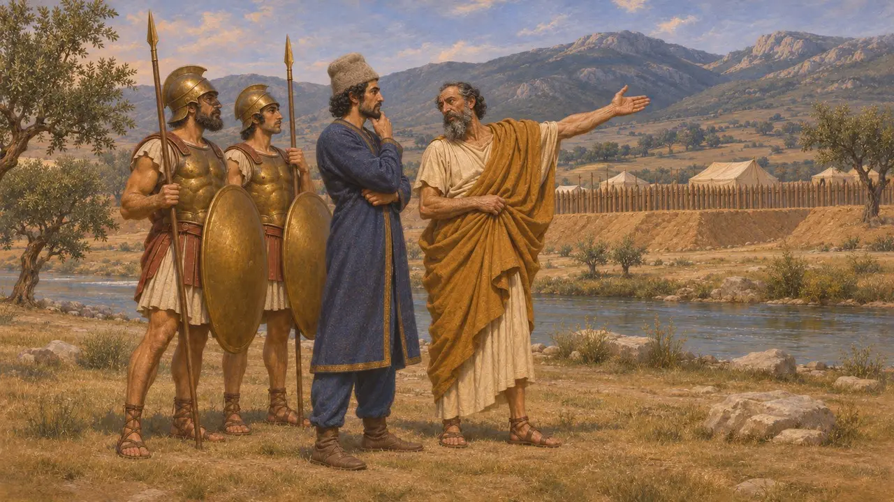
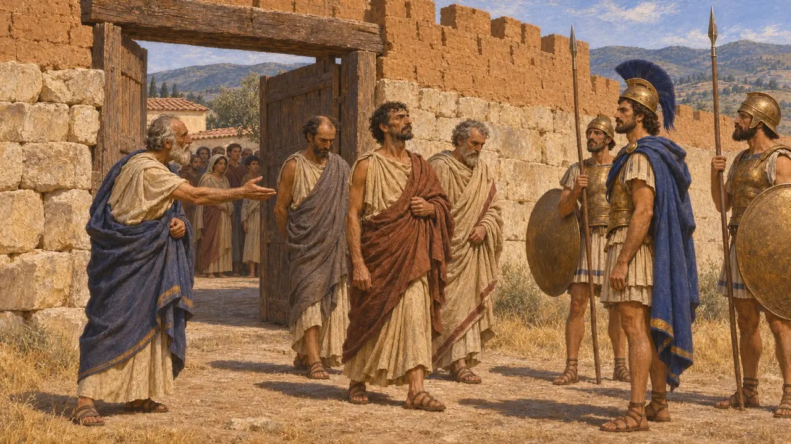
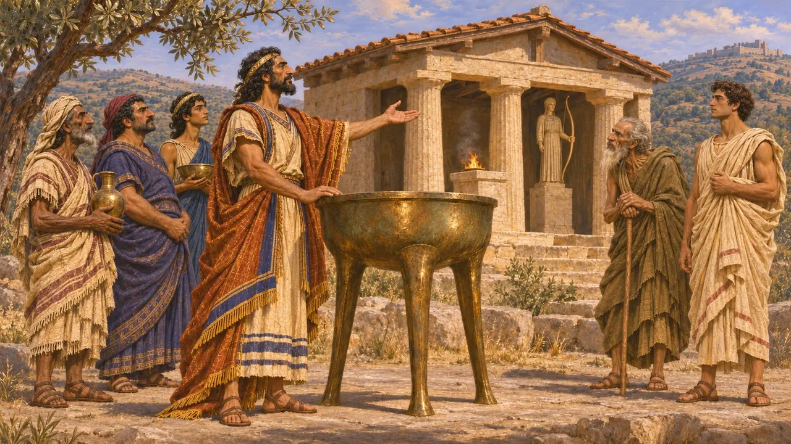
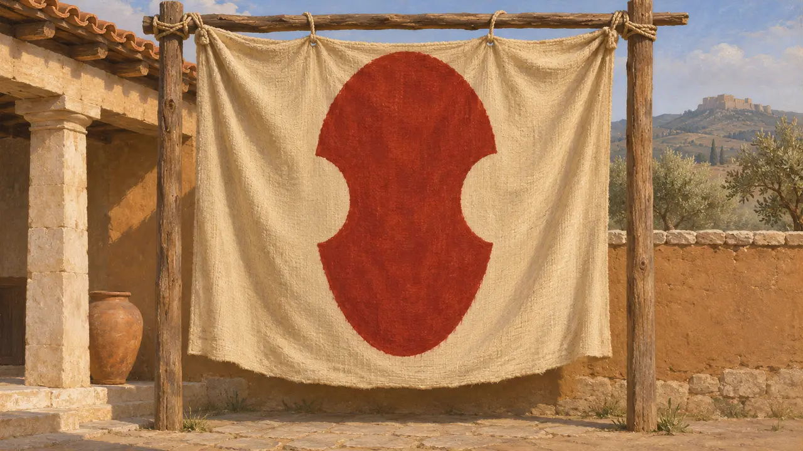

Thebaililer
Boiotia'daki Thebai halkı, MÖ 480-479'da Perslerin müttefikleri
Oyunda: Bölüm 10: Sıcak Kapılar, Bölüm 11: Final
Thebai, Orta Yunanistan'daki Boiotia'nın önde gelen kentiydi. 480'de Kserkses'e toprak ve su verdi. 479'da ordusu Thebai topraklarında konaklayan ve Plataia'da Thebaili hoplitler ve atlılarla yan yana savaşan Mardonios'un en önemli Yunan müttefiki oldu. Bu tercih, Thebai'yi muzaffer Yunanlılar arasında Med yanlılığının simgesi hâline getirdi.
Oyunda: Oyun Thebai'yi bir ticaret ortağı olarak gösterir ve Herodotos'un kaydettiği gibi Plataia'da Mardonios için Thebaili hoplitleri sahaya sürer. Ticaret rolü tarihi basitleştirir: 479'da Thebai, Pers ordusunu barındıran ve iaşesini sağlayan bir müttefikti.

Boiotia'nın önde gelen kenti
Antik anlatıThebai, Kithairon Dağı'nın kuzeyindeki Boiotia ovasında yer alıyor ve Boiotia kentlerinden oluşan bir birliğe önderlik ediyordu. Herodotos'a göre Thebai'nin baskısı altındaki Plataia, kendini Atina'nın himayesine verdi; Thukydides bu ittifakı yaklaşık 519'a tarihler. O tarihten itibaren Thebai ile Plataia birbirine düşman komşular oldu. Thebai sık sık Atina'yla da çatışıyordu; yaklaşık 506'da Boiotialıların Attika'ya yönelik başarısız saldırısında olduğu gibi.
Herodotus 6.108; Herodotus 5.74-77; Thucydides 3.68

Toprak ve su ile Thermopylai
TartışmalıHerodotos, Thebaileri Kserkses'in habercilerine toprak ve su veren Yunanlılar arasında sayar. Oysa Leontiades komutasındaki 400 Thebaili, Thermopylai'de Leonidas'ın yanında durmuştu. Herodotos, Leonidas'ın onları rehine olarak tuttuğunu, sonunda da Perslere teslim olduklarını ve Perslerin onları dağladığını söyler. Beş yüzyıldan fazla sonra yazan Boiotialı Plutarkhos bunu halkına yönelik bir iftira saymıştır; tarihçiler, 480'de Thebai'nin kimden yana olduğunu hâlâ tartışır.
Herodotus 7.132; Herodotus 7.205; Herodotus 7.222; Herodotus 7.233; Plutarch, On the Malice of Herodotus

Mardonios'un Plataia'daki müttefikleri
Antik anlatıHerodotos'a göre Thebaililer, Mardonios'u Boiotia'da kalmaya ve Yunan şehirlerini savaşla değil rüşvetle kazanmaya teşvik etti. Mardonios'un tahkimli ordugâhı, Asopos kıyısında Thebai topraklarındaydı. Thebaili Timagenidas ona Kithairon geçitlerini gözetmesini ve Yunanlıların ikmal kollarını kesmesini öğütledi. Savaşta Thebaili hoplitler Atinalılara karşı çetin bir mücadele verdi; Herodotos'a göre en önde gelenlerinden 300'ü can verdi.
Herodotus 9.2; Herodotus 9.15; Herodotus 9.38-39; Herodotus 9.67

Kuşatma ve Suç Meselesi
TartışmalıHerodotos'a göre savaştan on bir gün sonra Yunanlılar Thebai'yi kuşattı ve aralarında Timagenidas ile Attaginos'un da bulunduğu Pers yanlısı grubun önderlerinin teslimini istedi. Attaginos kaçtı, ancak diğerleri teslim edildi ve Pausanias onları Korinthos'ta idam ettirdi. Thukydides'te, MÖ 427'de konuşan Thebaili sözcüler Pers ittifakının suçunu bütün kente değil, dar bir yönetici zümreye yükledi. Modern bilim insanları bu mazereti, Thebaileri Perslerin hevesli müttefikleri olarak sunan Herodotos'un anlatısıyla karşılaştırarak tartar.
Herodotus 9.86-88; Thucydides 3.62

Kadmos ve Fenike harfleri
Geç dönem efsanesiYunan geleneğine göre Thebai'yi, kız kardeşi Europa'yı arayan Fenikeli bir prens olan Kadmos kurmuştu. Herodotos, Kadmos'la birlikte gelen Fenikelilerin Yunanistan'a harfleri getirdiğini ve Thebai'deki İsmenios Apollon tapınağında üç ayaklı kazanlar üzerinde eski Kadmos yazısını gördüğünü söyler. Bunlar kökene dair öykülerdir, kentin nasıl kurulduğunun kaydı değildir.
Herodotus 5.57-61

Adının yanındaki amblem
BelgelerdeThebai, kentin sikkelerinde olduğu gibi, iki yanında oyuk bulunan oval Boiotia kalkanını üzerinde bir theta ile taşır. Kalkan Boiotia kentlerinin işaretiydi. Oyunun Yunan renklerinde doğal yün üzerine kökboya kırmızısıyla çizilmiştir.
Head, Historia Numorum, Boeotia
Kaynaklar
- Herodotus, Histories, books 5-9
- Thucydides, book 3
- Plutarch, On the Malice of Herodotus
- R. J. Buck, A History of Boeotia, 1979
- N. Demand, Thebes in the Fifth Century, 1982